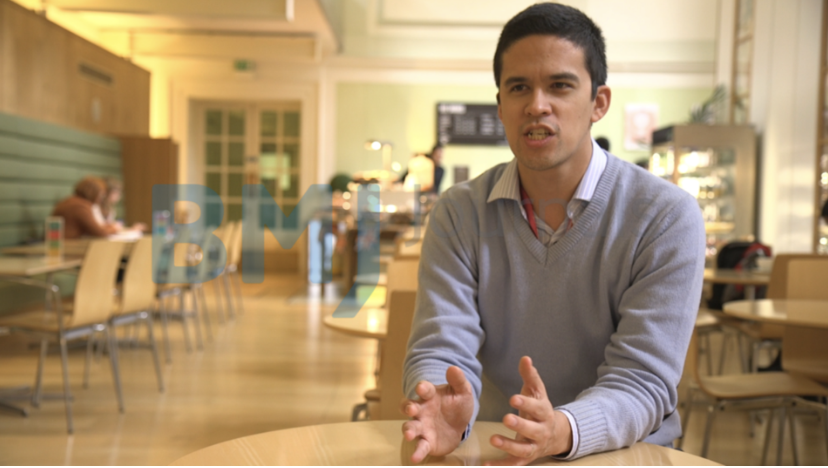
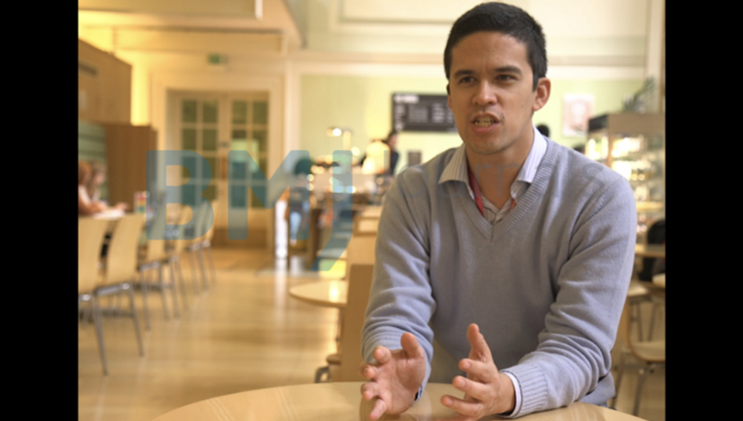

Georgia Health Quality Forum – Stories from Patients Project
What is the Georgia Health Quality Forum (GHQF)?
The GHQF is committed to advancing patient safety and healthcare quality in Georgia. Through education, research, and advocacy, we bring together practitioners, leaders, and researchers to promote safer clinical practices, develop valuable resources, and support medical education focused on systems improvement. Harm to patients can arise from medication and surgical mistakes, infections, and missed or delayed diagnoses, and can result in physical and emotional pain, reduction in quality of life, severe infirmity, or death.
Although we know that patient harm is major global issue, comparable to the level of harm from HIV or road injuries, there is almost no data about the scope of the problem in Georgia. Research has demonstrated that almost half of patient safety events are preventable, and that there are existing tools and approaches that improve care and reduce patient harm.
What is the Stories from Patients Project?
Part of the GQHF initiative, this documentary project aims to tell the stories of Georgians who have experienced patient harm and describe the scope of the problem, in turn improving the quality of care delivered in Georgian healthcare settings.
In this part of the project, we aim to collect stories of patients who have experienced patient harm and, if possible, the healthcare providers who observed the delivery of care leading to a patient safety event.
We are seeking to partner with Georgian journalism students who are interested in healthcare delivery, patient safety, and video storytelling. You will be working with researchers in the U.S. to produce short documentary pieces that will be posted on this site and distributed widely through the GHQF community, including with the U.S. Fulbright Program and other international collaborators.
Requirements and Eligibility:
- Passion to improve the Georgian healthcare system
- Ability to conduct interviews
- Basic skills with capturing, saving, and transferring video
- Basic skills in script writing, video editing, narrative storytelling, and website development
Expectations:
This a completely volunteer effort and no funding will be provided. Students participating in the Stories from Patients Project will receive film credit and may have the opportunity to pursue internships, independent study credits, or exchange programs with Suffolk University in Boston. Students should expect to dedicate 5-10 hours weekly on the project.
Timeline:
- Call for applicants - Spring 2025
- Collecting stories and filming – Summer 2025
- Editing and post-production – Fall 2025
- Distribution – Fall/Winter 2025
The project aims to produce short video stories similar to the below examples:
- https://psmf.org/patient-stories/
- https://betsylehmancenterma.gov/the-center
- https://josieking.org/jkf-tools/josies-story-a-patient-safety-curriculum/
- https://www.today.com/popculture/josie-s-story-turns-grief-patient-safety-fight-wbna32917267
Technical Specifications for Videos:
- Frame rate: 25 frames per second
- Widescreen (16:9) projects (the shape of our player)
- YES: 16:9 widescreen format 
- NO: 4:3 square format 
- Video Format: .mov, .mpg, .avi, or .mp4 (.mp4 preferred)
- Frame size minimum: 720 x 576 pixels (PAL)
- HD preferred: 1920 x 1080 pixels
- Video codec: H.264
- Video bitrate: minimum of 3 Mbps
- Audio codec: AAC
- Audio Frequency: 48000 Hz
- Audio bitrate: minimum of 128 kbps
Interested or have questions?
Contact:
Professor Peter Martelli
Department of Public Service and Healthcare Administration
Sawyer School of Business, Suffolk University
pmartelli at suffolk dot edu
Office phone: +1 617-305-1939